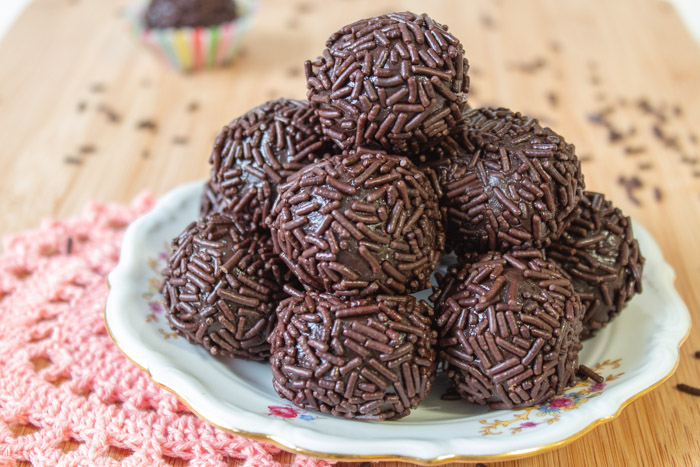

Brigadeiros

Description
Brigadeiro is a delicious Brazilian sweet that is very popular in the country. There is not a single childrens party without it. Otherwise, it is not a real party.
Ingredients
- 1 14 oz can sweetened condensed milk
- 3 Tbsp unsweetened cocoa powder, sifted
- 1 Tbsp butter
- A pinch of salt to enhance the flavor
- Chocolate sprinkles or any other you prefer
Steps
- Grease a plate with butter and set aside.
- In a medium non-stick pan, combine the condensed milk, butter, and cocoa powder in medium heat and mix it well.
- The mixture thickens after about 10-12 minutes, and once you can run your silicone spatula through the middle of it without it running back together for 2-3 seconds, it is done.
- Pour the mixture onto the lightly greased plate and let it chill in the fridge for an hour.
- In the meantime, prepare the candy cups and place the sprinkles in a bowl.
- Once chilled, you are ready to roll the little balls. Lightly wet your hands, put a tablespoon of the chewy mixture on your hands, and roll into a small ball.
- Roll it over the sprinkles.
- Place the balls in the candy cups, and voila! Enjoy it!